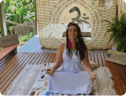

Ativo tua Luz para fluir na Vida
Terapias
Descubra o poder da cura natural e do equilíbrio interior.
Vivências
Explore experiências transformadoras que integram corpo, mente e espírito com nossas vivências.
Rituais
Desperte a conexão com o sagrado e promova a harmonia interior.
Fernanda
Sou uma alma em busca de luz, que aceitou a missão de espalhar mais brilho pelo planeta.
Há nove anos, mergulhei no universo das terapias holísticas, fazendo mais de 30 cursos para aprimorar meus conhecimentos.
Além disso, sou cantora profissional, com passagens por 21 países, onde minha voz encontrou diferentes melodias.
Amante da praia e do mar, encontro na natureza a energia divina que me inspira.
Embora filha de Iemanjá e Oxalá, minha prática não está ligada a religiões específicas. Tudo o que faço hoje foi recebido dos meus mentores espirituais.
Como virginiana, com ascendente em Capricórnio e lua em Sagitário, minha alma é colorida e vibrante.
Adoro usar cocar, uma expressão da minha essência livre e espontânea.
Com formação em Publicidade e pós-graduação em Marketing, sou terapeuta há sete anos, tendo atendido mais de 5 mil pessoas.
Minha paixão por igrejas me conecta com a espiritualidade e a fé.
A descoberta das medicinas da floresta veio em um momento de profunda transformação, quando buscava romper com padrões repetitivos de vida.
Reikiana desde 2007, tornei-me mestre em Reiki em 2017.
Dediquei cinco anos da minha vida ao Projeto Arte e Terapia na Santa Casa, onde pude vivenciar o poder da cura através da expressão artística com crianças internadas.
Minha essência é a espontaneidade, uma característica que se reflete em tudo o que faço e em como me relaciono com o mundo ao meu redor.
Terapias
Constelação Familiar

Reiki
Apometria
Apometria
Vivências
Renascimento

Sagrado Feminino

Rituais
Ayahuasca
Rapé

Cacau
Cursos
Reiki Usui, Xamânico e estelar
O curso de Reiki Usui, Xamânico e Estelar é uma imersão profunda em práticas ancestrais e espirituais que visam o equilíbrio e a cura em todos os níveis do ser. Integrando a sabedoria do Reiki Usui, com suas técnicas de canalização de energia vital, ao xamanismo, que proporciona conexão com a natureza e os espíritos, e ao Reiki Estelar, que expande a consciência cósmica, essa jornada oferece aos praticantes uma poderosa ferramenta para o autoconhecimento, a transformação pessoal e a conexão com o divino.